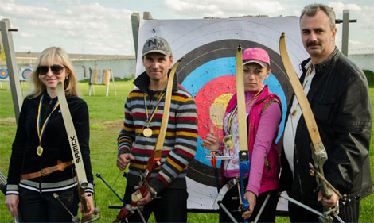

Ещё один приятный момент ждал нас в метании теннисного мяча. Пустовая Наталья заняла четвёртое место, добавляя в каждой попытке по два метра. Был сильный встречный ветер и все девушки показали плохие результаты. Метнув на 27,5 метров, Наталья проиграла бронзовому призёру один метр.
Победителем здесь стала представительница фитнес-центра «KING» с результатом 35,2 метра.
Положение призёров в общем зачёте: I – «Adidas» 18 очков, II – «KING» 19 очков, III – «Новая линия» 19 очков. «ХТС», набрав 22 очка, заняла IV место, опередили в этом виде практически всех своих прямых конкурентов в общекомандном зачёте, за исключением «Adidas».
Стрельба из лука
Соревнования по стрельбе из лука состоялись 23
апреля на тренировочном полигоне СДЮШОР «Коммунар».
Команда КП «Харьковские тепловые сети», имея
в своём составе опытных участников, вполне могла
рассчитывать на победу, но всякое могло произойти. В
составе сборной тепловых сетей мог очутиться любой
желающий, но отбор прошли наиболее точные лучники
и личности, способные работать в команде и во благо
команды. Вот состав нашей золотой команды: Татьяна
Альшаева, Лилия Зинченко, Дмитрий Чередниченко
и Андрей Гончаров. Ухудшение самочувствия хотя бы
одного из участников могло привести к плачевным последствиям
для команды, ведь каждый результат собирался по крупицам.
По правилам соревнований, все 13 команд проходили квалификацию. Наши парни и девушки показали наилучший результат, набрав по итогам этого раунда 503 очка. Последними в квалификации были лучники из команды сотового оператора Lifecell, набравшие 194 очка. Команда Adidas, занявшая в квалификации второе место, набрала 460 очков. Прекрасно выстроенная организаторами соревнований турнирная сетка позволила четырём командам, показавшим лучшие результаты в квалификации, дойти до борьбы за призовые места.
Наши лучники, пропустив 1/8 финала на правах лидера квалификации, победили всех своих соперников со счётом 6-0. В 1/4 были побеждены представители «Укрнафты», в 1/2 «Водоканала» и в финале «Adidas». В матче за 3-е место «Freshline» победил «Водоканал» 6-2.
Это уже второй вид «Битвы корпораций», в котором побеждает КП «ХТС». Среди 13 лучших организаций и предприятий города мы стали лучшими, а это много значит. Победительницей в индивидуальном зачёте среди женщин стала наша Татьяна Альшаева. Команда доказала, что не достаточно иметь опыт и навыки, а необходимо упорно тренироваться всем коллективом, укреплять дух и прислушиваться к рекомендациям тренеров, а также партнёров по команде. Эта победа нашего снайперского коллектива вывела, на данный момент, команду КП «ХТС» на 3-е место в
общем зачёте среди 24-х команд соревнований «Битва корпораций» после 9-ти этапов. Список спортсменов КП «ХТС», участвовавших в двух и более видах спорта турнира «Битва корпораций» (в скобках указано количество участий): Иваненко Ольга (5); Гармаш Наталия (5); Лукьянченков Виктор (4); Яритенко Олег (3); Воронов Артём (2); Галкин Константин (2); Лещинская Татьяна (2). Всех желающих приглашаем поучаствовать в двух завершающих этапах «Битвы корпораций» в составе сборной нашего предприятия, которые должны состоятся уже в мае 2016 года! X этап – Уличный баскетбол, XI этап – Пляжный волейбол.